Until 2012, it was only possible to integrate an audio or video player using the proprietary Flash technology, marketed by the company Macromedia (later acquired by Adobe). The <video> element of HTML5 is one of the three “Flash killers” (the others being <audio> for the sound and <canvas> for drawing and animation). (Note that Adobe no longer supports Flash Player since December 31, 2020)
You will learn more about the different attributes of the <video> element later on in the course.
The <video> element is supported by all major browsers. See the support table from CanIUse.
Help! <video src=“my youtube video URL”></video> does not work!
BEWARE: you cannot directly embed videos from most of the popular Web sites such as YouTube, Dailymotion, Vimeo, etc. For commercial reasons, and because advertising is automatically added to the videos, these Web sites do not allow “regular” embedding of their videos.
While they use HTML5 to render their videos, these hosting sites (YouTube, etc.) use rather complex techniques in order to prevent you from using them with the <video>element. Instead, you often need to embed an <iframe> that will render the HTML5 videos in your Web site, and of course, the advertising that comes along with them.
Usually you have an “embed” button close to the videos that prompts you with some HTML code that you can copy and paste for embedding.
<iframe width="560" height="315" src="https://www.youtube.com/embed/WMFXg-kni0U" title="YouTube video player" frameborder="0" allow="accelerometer; autoplay; clipboard-write; encrypted-media; gyroscope; picture-in-picture" allowfullscreen></iframe>
The YouTube video embedded in this page by the above code: it’s HTML5 but it’s not a <video> element directly inserted in the HTML of this page, it’s an <iframe>.
This is one of the main problems encountered in recent years: codec support was not the same from one browser to another, for commercial/economic reasons. For example, between 2010 and 2013, Firefox only supported the ogg/oggm format. It did not support mp3/mp4 encoding for audio/video, while Internet Explorer only supported H.264 encoding. Since 2012, things have changed with browser updates and today most popular formats are supported.
The recommended CODEC, which works in all popular browsers: H264/mp4.
This course will focus on the <audio> element. We present the Web Audio API and other advanced HTML5 features in the W3Cx HTML5 Apps and Games course.
The attributes, event set and JavaScript API of the <audio> element are just a “reduced” version of the ones from the <video> element, and here we will only address the differences and peculiarities.
Here is a simple example (also available online example from JSBin):
Press play to stream the neigh of a horse: (does not work in git)
<!DOCTYPE html>
<html lang="en">
<head>
<meta charset="utf-8"/>
<title>horse song</title>
</head>
<body>
<audio controls="controls">
<source src="https://mainline.i3s.unice.fr/mooc/horse.ogg"
type="audio/ogg" />
<source src="https://mainline.i3s.unice.fr/mooc/horse.mp3"
type="audio/mp3" />
Your browser does not support the audio element.
Download the audio/video in
<a href="https://mainline.i3s.unice.fr/mooc/horse.ogg">OGG</a>
or <a href="https://mainline.i3s.unice.fr/mooc/horse.mp3">MP3</a>
format.
</audio>
</body>
</html>
In this example, just as for the <video> element, we used the controls attribute in order to render the play/stop, time, volume and progress widgets.
Notice the other similarities: between the <audio>…<audio> tags, we added a text message that is displayed if the Web browser doesn’t support the <audio> element, and we used several <source>…</source> elements that link to different audio formats for the same file. The browser will use the first format it recognizes.
Here are the most common attributes you can use with the <video> element. They are self explanatory…
The autoplay attribute is not recommended if your Web site targets mobile applications (actually, it is often ignored by mobile browsers), as it may consume bandwidth even if the user is not interested in watching the proposed video. If you target mobile devices, we recommend using preload=none as well, as the default value for this attribute is auto.
Best practice: do not use autoplay and add preload=“none” if you target mobile devices or if you have multiple audio/video files on the same page. For example, this page contains many audio elements and it does not make sense to have them preload or autoplay.
If the poster attribute is missing, usually the first non-blank frame of the video will be used as the image that is shown when the video is not playing.
Do not abuse of the autoplay attribute. We talked earlier about mobile applications, but even on desktop applications it’s usually a bad idea to use it (except for WebCams and for some animations with small video loops, without sound, or for sites like YouTube, with just videos).
Best practice: think twice before using the autoplay attribute, even for desktop applications.
The attributes you can use with the <audio> element are a subset of those available for the <video> element. Except for the poster attribute, they are all recognized and have the expected meanings:
As with the <video> element, the same best practice in regard to preload and autoplay attributes should be followed.
The <video> and <audio> elements are just like other HTML elements, so CSS can be used for styling, including CSS transitions, animations, etc.
You can try this example online at JSBin.
To add some styling to the basic example we saw when we introduced the <audio> element, we just add a <figure> with two children: an <img> and a <figcaption>. Inside the <figcaption> we add the <audio> element from the previous example.
Please move the mouse pointer over this player’s elements: (does not work in git)
<figure id="figaudio1"> <img id="imghorse" width="200" src="https://upload.wikimedia.org/wikipedia/commons/d/d4/Nokota_Horses.jpg" alt = "a horse"/> <figcaption id="figcptionaudio1"> Press Play to hear the horse! <audio controls="controls"> <source src="https://mainline.i3s.unice.fr/mooc/horse.ogg" type="audio/ogg" /> <source src="https://mainline.i3s.unice.fr/mooc/horse.mp3" type="audio/mp3" /> Your browser does not support the audio element. Download the audio/video in <a href="https://mainline.i3s.unice.fr/mooc/horse.ogg">OGG</a> or <a href="https://mainline.i3s.unice.fr/mooc/horse.mp3">MP3</a> format. </audio> </figcaption> </figure>

Press Play to hear the horse! (does not work in git)
<figure id="figaudio1">
<img id="imghorse" width="200"
src="https://upload.wikimedia.org/wikipedia/commons/d/d4/Nokota_Horses.jpg"
alt = "a horse"/>
<figcaption id="figcptionaudio1"> Press Play to hear the horse!
<audio controls="controls">
<source src="https://mainline.i3s.unice.fr/mooc/horse.ogg"
type="audio/ogg" />
<source src="https://mainline.i3s.unice.fr/mooc/horse.mp3"
type="audio/mp3" />
Your browser does not support the audio element.
Download the audio/video in
<a href="https://mainline.i3s.unice.fr/mooc/horse.ogg">OGG</a>
or <a href="https://mainline.i3s.unice.fr/mooc/horse.mp3">MP3</a>
format.
</audio>
</figcaption>
</figure>
#figaudio1 {
width : 420px;;
text-align:center;
padding : 6px;
background : white;
margin : 0 11px 0px 0;
border :solid 1px #888888;
border-radius : 8px ;
}
#figcptionaudio1 {
font-size : .8em;
padding : 6px 8px;
background : #dddddd;
display :block;
text-align :center;
font-family : georgia, serif;
font-style : italic;
border-radius : 7px ;
}
#figaudio1 > img {
background : #eeeeee;
padding : 5px;
border : solid 1px #444444;
}
/* For audio and img transitions/animation */
audio, #figaudio1 > img {
transition:all 0.5s;
}
#figaudio1 > img:hover {
box-shadow: 15px 15px 20px rgba(0,0, 0, 0.4);
transform: scale(1.05);
}
audio:hover, audio:focus, audio:active {
box-shadow: 15px 15px 20px rgba(0,0, 0, 0.4);
transform: scale(1.05);
}
See this example online (where you can modify the code on the fly) or just play the following video, and move the mouse pointer in and out of the video while it’s playing.
This example uses the pseudo CSS class :hover in order to track the mouseover event. On mouseover, it uses a CSS transition property that interpolates the changes in the scale and orientation of the video element (done using a transform CSS property).
<video <b>id="w3devCampusVideo"</b> autoplay controls> <source src=https://mainline.i3s.unice.fr/mooc/samuraiPizzacat.webm type=video/webm> <source src=https://mainline.i3s.unice.fr/mooc/samuraiPizzacat.ogg type=video/ogg> <source src=https://mainline.i3s.unice.fr/mooc/samuraiPizzacat.mp4 type=video/mp4> </video>
#w3devCampusVideo {
width: 300px;
<b>transition: all 0.5s ease-in-out;</b>
}
#w3devCampusVideo</b>:hover</b> {
width:400px;
transform:rotate(-5deg);
}
This is a trendy way of displaying videos.
Below you will find two examples that show how to do this trick. The first is for a “regular” video, using the <video> and <source> elements. This technique can also be used on any YouTube embedded videos (see Example #2 below).
The interesting part is that we use a 100% standard (and really small and simple) JavaScript code here to handle the window resize events and we just set regular CSS properties width and height of the video element, to resize the video.
Full width, resizable, borderless video, just using plain CSS and JS DOM events.
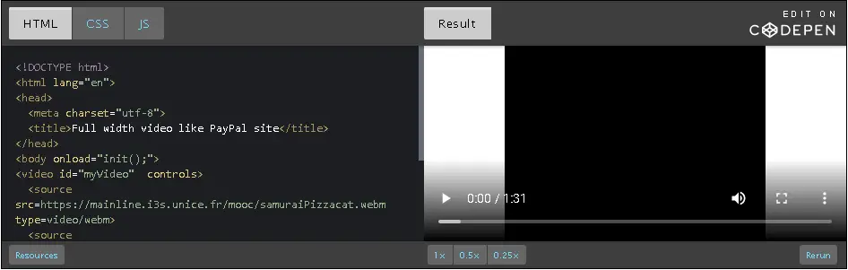<!DOCTYPE html> <html lang="en"> <head> <meta charset="utf-8"> <title>Full width video like PayPal site</title> </head> <body onload="init();"> <video id="myVideo" autoplay> <source src=https://mainline.i3s.unice.fr/mooc/samuraiPizzacat.webm type=video/webm> <source src=https://mainline.i3s.unice.fr/mooc/samuraiPizzacat.ogg type=video/ogg> <source src=https://mainline.i3s.unice.fr/mooc/samuraiPizzacat.mp4 type=video/mp4> </video> </body>
body {
margin:0;
padding:0;
overflow:hidden;
}
var video;
function init() {
// function called when the page is loaded
video = document.querySelector("#myVideo");
// For initial value
video.width = window.innerWidth;
video.height = window.innerHeight;
// For dealing with window resize
window.onresize = function() {
video.width = window.innerWidth;
video.height = window.innerHeight;
};
}
Full width, resizable, borderless YouTube video. To do this: just 100% standard CSS + DOM manipulation using JavaScript.
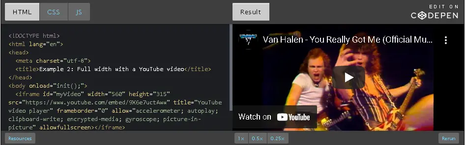The CSS and JavaScript codes for this example are exactly the same as in Example #1.
In this example, the video does not rescale; it’s just cropped if the browser window is resized. Enlarge your browser and you’ll see a man with a phone on the right. Resize your browser and you’ll see only part of the video.
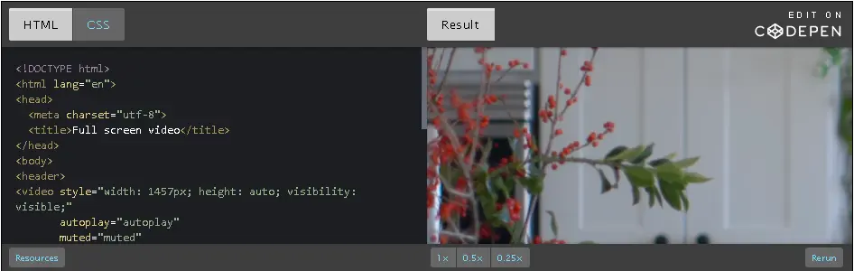body {
margin:0;
padding:0;
overflow:hidden;
}
video {
width:100%;
height:auto;
}
This time the video is zoomed in so that it’s much bigger than the browser’s window. When we resize the browser, the part of the video that is visible adapts itself. It’s not “real resize” of the video. Try this example and read the explanation in this article by Dudley Storey.
<!DOCTYPE html>
<html lang="en">
<head>
<meta charset="utf-8">
<title>Full screen video with CSS effects </title>
</head>
<body>
<header>
<video autoplay loop=""
poster="https://mainline.i3s.unice.fr/mooc/polina.jpg"
id="bgvid">
<source src="https://mainline.i3s.unice.fr/mooc/polina.webm"
type="video/webm">
<source src="https://mainline.i3s.unice.fr/mooc/polina.mp4"
type="video/mp4">
</video>
</header>
<section>
<h1>Full screen video with CSS effects</h1>
</section>
</body>
</html>
html, body {
color:white;
height: 100%;
}
header {
height: 100%;
background-image: url('https://mainline.i3s.unice.fr/mooc/dots.png'), url('#');
background-repeat: repeat, no-repeat;
background-size: auto, cover;
background-position: center center, top left;
font-family: sans-serif;
color: #051a00;
}
header video {
position:fixed;
top:50%;
left:50%;
min-width:100%;
min-height:100%;
width:auto;
height:auto;
z-index:-100;
transform:translateX(-50%) translateY(-50%);
}
the video is in the header, and the header has a plotted transparent background image (“dots.png”) that is repeated in X and Y (see lines 8 and 9).
Full screen video that resizes and keeps its ratio, using the viewport units.
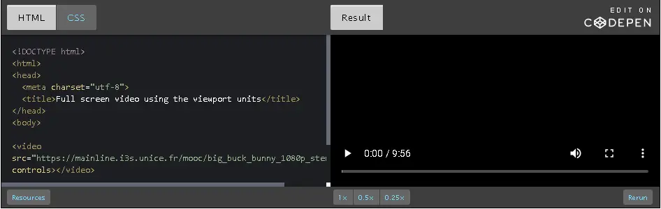This time we obtain the same result as with the first example that used JavaScript and a resize event. The video resizes correctly and keeps its ratio.
body {
margin: 0;
}
video {
position: absolute;
width: 100vw;
height: 100vh;
object-fit: cover;
object-position: center center;
}
Let’s use the same video to compare the different approaches again:
Resizing the browser window shows that #1 (JavaScript) and #3 (viewport units) behave in the same way: the width or height of the video always fills the window (whichever is smaller), and we always see the whole video.
Conclusion: we can get full size video without JavaScript by using viewport units (vw and vh), unless we need to support some old browsers (see their current support on CanIUse).
Setting the video to 100% width and height results in different behavior:
The <video> and <audio> elements have methods, properties/attributes and events that can be manipulated with JavaScript. Using the DOM API, it’s possible to manipulate an audio or video element as a JavaScript object that has:
The set of properties/attributes/methods of the <audio> and <video> elements is called an “API” (Application Programming Interface). For example, we will speak here of the “media API” to talk about the associated API.
Like any HTML element, the <video> element can be manipulated/created using the DOM JavaScript API. Here is an example of programmatically creating a <video> element:
var video = document.createElement('video');
video.src = 'video.mp4';
video.controls = true;
document.body.appendChild(video);
This will create a complete video player for the file “video.mp4”, with control buttons, and will add it to the <body> element of the page.
Please look at this interesting example:
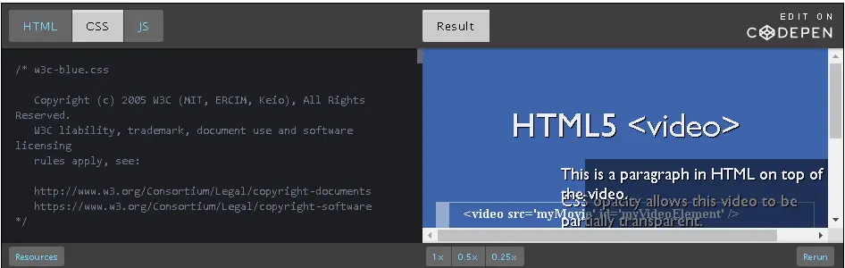Note that in order to play the video, you must click on the “vid.play()” text. To pause it, you click on the “vid.pause()” text, and so on. Notice the text at the top of the video, as well as the transparency. The text can be selected, since all the elements displayed are pure DOM objects. You can zoom the page in and out, etc. This was not possible with the Flash technology.
Conclusion: you can very easily change the look and feel of the standard video player by using custom CSS and designing your own control widgets. We can find many examples of such video players that offer extended functionalities on the Web. We will present some of them later in the course, but before that, let’s see a little more of what we can do using the JavaScript API of the <video> element (it will be an identical approach for the <audio> element, since it shares the same API by a very small margin).
The JavaScript API gives you powerful tools to manipulate the <video> element, as the video object provides many properties, methods and events.
The complete list of events can be found in the HTML5 living standard specification.
The list of properties can be found at the W3C HTML5 Video Events and API page. This page is interesting for Web developers because it shows an interactive view of the different values and events changing over time while the video is playing within the page.
Try the direct link, and play with the different buttons and look at the table of events and properties that will change in real time. The displayed names show the properties, events, and methods from the API.
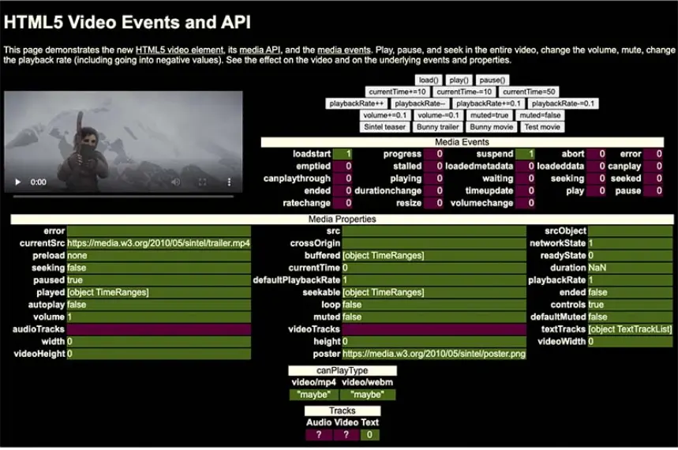We provide this as a quick reminder - keep in mind that the complete list is much longer!
| Methods | Properties | Events |
|---|---|---|
| play() | currentSrc | play |
| pause() | currentTime | pause |
| load() | startTime (readonly) | progress |
| canPlayType() | videoWidth | error |
| videoHeight | timeupdate | |
| duration (readonly) | ended | |
| ended (readonly) | abort | |
| error | empty | |
| paused (readonly) | emptied | |
| muted | waiting | |
| seeking | loadedmetadata | |
| volume | ||
| height | ||
| width | ||
| seekable (readonly) | ||
| played (readonly) |
In the next pages, let’s see, through a set of examples, how to use these most important properties, methods, and events…
The JavaScript API is useful for implementing playlists, making custom user interfaces and many other interesting things. The “enhanced HTML5 multimedia players” lesson presented further on the course relies heavily on this API.
This example gives the first steps towards writing a custom video player. It shows basic usage of the JavaScript API for adding custom buttons to play/pause the video or to go back to the beginning by setting the currentTime property to zero.
<video id="vid" controls>
<source src=https://mainline.i3s.unice.fr/mooc/samuraiPizzacat.webm
type=video/webm>
</video>
<p>Example of custom controls:</p>
<button onclick="playVideo();" style="cursor: pointer;">Play</button>
<button onclick="pauseVideo();" style="cursor: pointer;">Pause</button>
<button onclick="rewindVideo();" style="cursor: pointer;">
Back to beginning</button>
<script>
vid = document.querySelector("#vid");
function playVideo() {
vid.play();
}
function pauseVideo() {
vid.pause();
}
function rewindVideo() {
vid.currentTime = 0;
}
</script>
This example listens to the ended event, and calls a callback function when the video is ended.
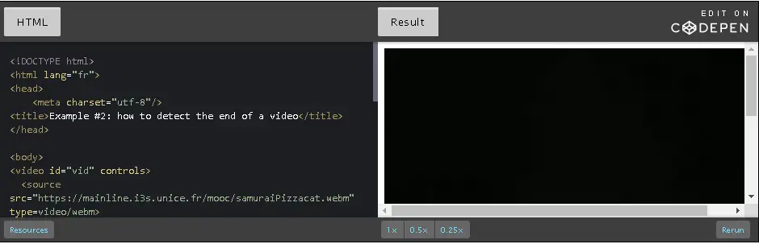<video src="video.ogv" id="myVideo">
video not supported
</video>
<script type='text/javascript'>
var vid = document.querySelector('#myVideo');
vid.addEventListener('ended', playNextVideo, false);
function playNextVideo(e) {
// Whatever you want to do after the event, change the src attribute
// of the video element, for example, in order to play another video
}
</script>
This example detects the end of a video, then loads the next video, changes the src attribute of the video element and plays the video.
Check the online example below: use the progress cursor to go near the end of the first video that is being played, and see how it continues with the next video.
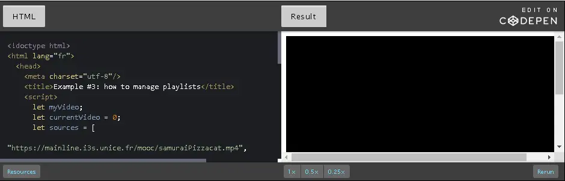<!DOCTYPE html>
<html lang="en">
<head>
<meta charset="utf-8"/>
<title>Sequential Movies</title>
<script>
var myVideo;
var currentVideo = 0;
var sources = [
"https://mainline.i3s.unice.fr/mooc/samuraiPizzacat.mp4",
"https://www.archive.org/download/AnimatedMechanicalArtPiecesAtMit/P1120973_512kb.mp4"
];
// Set the src of the video to the next URL in the playlist
// If at the end we start again from beginning (the modulo
// source.length does that)
function loadNextVideo() {
myVideo.src = sources[currentVideo % sources.length]
myVideo.load();
currentVideo++;
}
// listener plays the video
function loadAndplayNextVideo() {
console.log("playing " + sources[currentVideo % sources.length])
loadNextVideo();
myVideo.play();
}
// Called when the page is loaded
function init(){
// get the video element using the DOM api
myVideo = document.querySelector("#myVideo");
// Defines a callback function called each time a video ended
myVideo.addEventListener('ended', loadAndplayNextVideo, false);
// Loads the first video when the page is loaded
loadNextVideo();
}
</script>
</head>
<body onload="init()">
<video id="myVideo"
controls>
</video>
</body>
</html>
In this section, we propose five extended examples that use more JavaScript and more complex CSS manipulation. They might be a little hard to understand if you are a JavaScript beginner, but don’t be afraid to try and test them, look at the code, etc.
Some examples are given “as is”, such as the custom video player that uses SVG (at the end of the page); if you are interested, you may view the code.
Please see this example online, originally written by Chris Heilmann, and tuned by us ;).
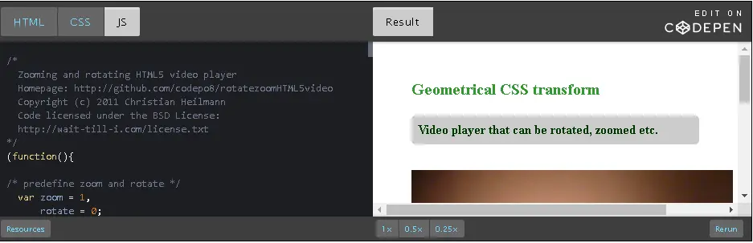Don’t forget to click the JavaScript and CSS tabs of the CodePen in order to display the JavaScript code that creates the buttons on the right of the video, and the CSS that processes the different clicks and applies CSS3 transforms.
This example also shows how to handle failures. See the code and play with this example below:
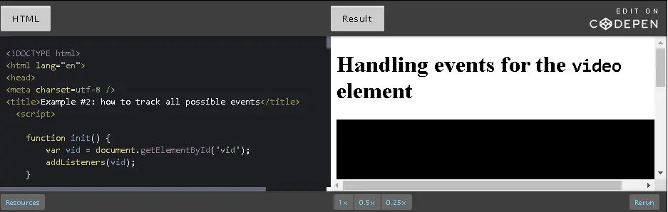Below is a piece of code for handling errors during video playback:
...
vid.addEventListener('error', function(evt) {
logEvent(evt,'red');
}, false);
...
function logEvent(evt, color) {
switch (evt.type) {
...
case 'error':
var error = document.querySelector('video').error;
switch (error.code) {
case error.MEDIA_ERR_ABORTED:
note.innerHTML = "fetching aborted at the user's request";
break;
case error.MEDIA_ERR_NETWORK:
note.innerHTML = "a network error caused the browser to stop fetching the media";
break;
case error.MEDIA_ERR_DECODE:
note.innerHTML = "an error occurred while decoding the media";
break;
case error.MEDIA_ERR_SRC_NOT_SUPPORTED:
note.innerHTML = "the media indicated by the src
attribute was not suitable";
break;
default:
note.innerHTML = "an error occurred";
break;
}
break;
}
...
}
See the JSBin example online here too.
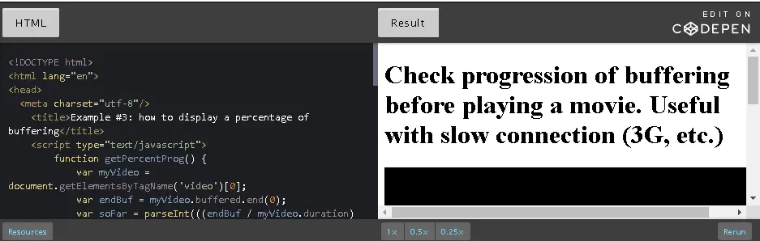Note that on mobile phones, the video does not start until the user presses the play control or clicks on the video picture. Using the "canplaythrough" event is a trick to call a function that starts the video player as soon as the page is loaded on desktop. This event is not supported by mobile devices, so if you try this example on a mobile, the video will not start automatically.
As explained by the Apple Developer Web site: "The buffered property is a TimeRanges object: an array of start and stop times, not a single value. Consider what happens if the person watching the media uses the time scrubber to jump forward to a point in the movie that hasn’t loaded yet—the movie stops loading and jumps forward to the new point in time, then starts buffering again from there. So the buffered property can contain an array of discontinuous ranges. The example simply seeks the end of the array and reads the last value, so it actually shows the percentage into the movie duration for which there is data."
<!DOCTYPE html>
<html lang="en">
<head>
<title>JavaScript Progress Monitor</title>
<meta charset="utf-8"/>
<script>
function getPercentProg() {
var myVideo = document.getElementsByTagName('video')[0];
var endBuf = myVideo.buffered.end(0);
var soFar = parseInt(((endBuf / myVideo.duration) * 100));
document.getElementById("loadStatus").innerHTML = soFar + '%';
}
// Will be called as soon as the page is ready on desktop computer,
// Only when a user clicks on play control or image on mobile
function myAutoPlay() {
var myVideo = document.getElementsByTagName('video')[0];
myVideo.play();
}
function addMyListeners(){
var myVideo = document.getElementsByTagName('video')[0];
myVideo.addEventListener('progress', getPercentProg, false);
// Calls autoplay only if the device is adapted
myVideo.addEventListener('canplaythrough', myAutoPlay, false);
}
</script>
</head>
<body onload="addMyListeners()">
<h1>Check progression of buffering before playing a movie. Useful withy
slow connexion (3G, etc.)</h1>
<div>
<video controls>
<source src=https://html5doctor.com/demos/video-canvas-magic/video.webm
type=video/webm>
<source src=https://html5doctor.com/demos/video-canvas-magic/video.ogg
type=video/ogg>
<source src=https://html5doctor.com/demos/video-canvas-magic/video.mp4
type=video/mp4>
</video>
<p id="loadStatus">Buffering...</p>
</div>
</body>
</html>
This is the ultimate way of doing a real custom player: redesign your own controls using SVG shapes! This example (try it online) is given “as is” for those of you who may be curious.
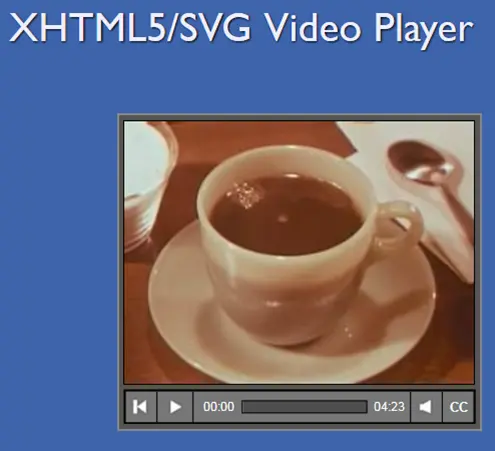This is more an example than a tutorial. Maurice, a student who followed the precursor version of this MOOC, had the assignment to write a custom video player with playlist, video thumbnails, custom play/pause/next/previous/volume controls, and present it in a Web page that used a nice layout based on the HTML5 structuring elements studied previously.
Here is the online example. We recommend that you look at the source code:
This section introduces the HTML5 <track> element, useful for adding closed captions, subtitles, descriptions, and metadata to your videos. It comes with a new JavaScript API.
The WebVTT format used for describing a track file is also presented in this chapter.
Please check the browser support related to the <track> element support by browsers.
The accessibility features of TV programs often propose both options for people with hearing deficiencies.
The <track> element cannot be used with a file:// URL. Please use https:// and a Web server. Your server must use a special MIME format for the .vtt files: text/vtt;charset=utf-8 (set by default on most servers now).
<Files mysubtitle.vtt> ForceType text/vtt;charset=utf-8 </Files>
It is worth mentioning that most browsers work well with WebVTT, even if the MIME type is not defined.
Here is an example of a video element that includes a <track> element in the .vtt (WebVTT) format (line 9 in the source code shown below):
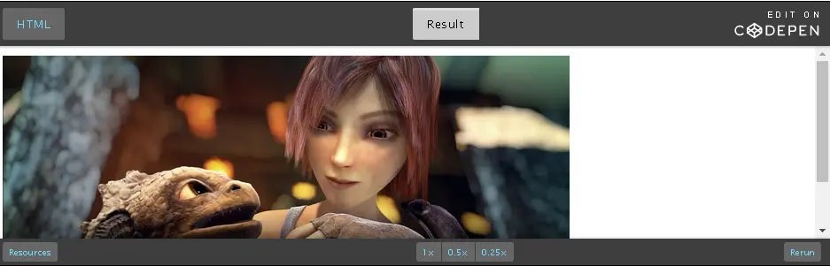The example uses a <track> element to insert basic captions to the video: sounds and music are described, in addition to standard subtitles that correspond to what the different movie characters say.
<video height="272" width="640" poster="https://mainline.i3s.unice.fr/mooc/q1fx20VZ-640.jpg" crossorigin="anonymous" controls> <source src="https://mainline.i3s.unice.fr/mooc/sintel.mp4" type="video/mp4"> <source src="https://mainline.i3s.unice.fr/mooc/sintel.webm" type="video/webm"> <track src="https://mainline.i3s.unice.fr/mooc/sintel-captions.vtt" kind="captions" label="Closed Captions" default> </video>
Multiple tracks are needed to support different langages, video captions for the hearing-impaired, subtitles, etc.
Below is an example (from the specification) that includes multiple <track> elements (subtitles for three languages and captions only for English):
<video src="brave.webm"> <track kind=subtitles src=brave.en.vtt srclang=en label="English"> <track kind=captions src=brave.en.hoh.vtt srclang=en label="English for the Hard of Hearing"> <track kind=subtitles src=brave.fr.vtt srclang=fr lang=fr label="Français"> <track kind=subtitles src=brave.de.vtt srclang=de lang=de label="Deutsch"> </video>
Note the use of some new attributes in the <track> element:
The " ;WebVTT: The Web Video Text Tracks Format " defines files that contain text for captions and subtitles, and much more… The WebVTT files are used with the src attribute of the <track> element, that can be used inside a <video>…</video>.
In the interactive example presented before, we used a file called sintel-captions.vtt:
<video height="272" width="640" poster="https://mainline.i3s.unice.fr/mooc/q1fx20VZ-640.jpg" crossorigin="anonymous" controls> ... <track src="https://mainline.i3s.unice.fr/mooc/sintel-captions.vtt" kind="captions" label="Closed Captions" default> </video>
And here is an extract of the corresponding sintel-captions.vtt file:
WEBVTT 00:00:01.000 --> 00:00:02.042 (drumbeat) 00:00:07.167 --> 00:00:12.025 (plaintive violin solo playing) 00:00:15.000 --> 00:00:18.183 (wind whistling) 00:00:24.167 --> 00:00:27.025 (orchestra music swells) 00:00:43.033 --> 00:00:43.192 (weapons clash) 00:00:44.000 --> 00:00:44.175 (gasps) 00:00:44.183 --> 00:00:45.158 (grunts) 00:00:45.167 --> 00:00:47.058 (groaning) 00:00:54.192 --> 00:00:55.150 (blade rings) 00:00:55.158 --> 00:00:57.008 (bellowing) 00:00:57.017 --> 00:00:58.067 (grunting) 00:00:59.075 --> 00:01:00.133 (panting) 00:01:05.108 --> 00:01:06.125 (cries out in agony) 00:01:08.050 --> 00:01:09.058 (panting) 00:01:12.092 --> 00:01:13.142 (panting) 00:01:14.017 --> 00:01:18.125 (orchestra plays ominous low notes) 00:01:31.058 --> 00:01:35.133 (plaintive violin solo returns) 00:01:46.158 --> 00:01:49.058 This blade has a dark past. 00:01:51.092 --> 00:01:54.108 It has shed much innocent blood. 00:01:57.083 --> 00:02:00.000 You're a fool for traveling alone so completely unprepared. 00:02:01.100 --> 00:02:03.033 You're lucky your blood's still flowing. 00:02:04.183 --> 00:02:06.075 Thank you.
This format is rather simple, but we still recommend reading this excellent article from Mozilla Developer Network that explains in detail all the different options.
Each “element” in this file has a starting and ending time, plus a value (the text that will be displayed), followed by a blank line (blanklines are separators between elements).
Each element is called “a cue”, and may optionally have an ID that will be useful when using the track element JavaScript API, inparticular the getCueById() method of TextTrack objects.
9 00:00:21.000 --> 00:00:22.000 to hear from you 10 00:00:22.500 --> 00:00:25.000 We want to hear what inspires you as a developer
Opening 00:00:00.000 --> 00:00:30.000 Welcome to our <i>nice film</i>
The displayed text can span multiple lines, but blank lines are not allowed, as they would be interpreted as a separator:
00:01:57.083 --> 00:02:00.000 <p>You're a fool for traveling alone</p> <p>so completely unprepared.</p>
Let’s look at a simple example. First, you need a video on one of the formats/codecs supported by the browsers you target. A recommended codec is mp4/H264, but other formats, such as webm, may have some advantages if the browser supports them. For example, webm allows the video to start playing after a much shorter buffering time. In other words, try if possible to provide the video encoded with more than one codec.
For this, use any sort of open source, free or commercial video encoding software, such as Handbrake (free, open source) or Super (free). There are also online video encoding services, and you can even upload your video to YouTube, let it encode your video in several resolutions and codecs, and use a browser extension such as Video DownloadHelper (for Firefox) or JDownloader, to download the video in your chosen formats.
So, let’s suppose you have a video like the one below (we included it on YouTube for practical reasons). This video has subtitles (you can activate them in the YouTube player), but the goal of this lesson is to explain how we made them without using the YouTube embedded tools, which do not allow export the subtitle file to be exported in the webVTT format.
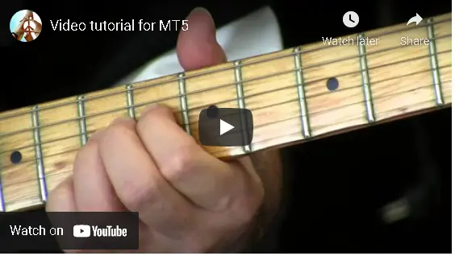And if you’ve also got it in mp4/H264 and in webm formats, here is how you can embed it in your page using the video element:
<video id="myVideo" width=500 controls> <source src="videos/SameOldSongAndDanceRogerLathaudPart1MidRes.mp4" type="video/mp4"> <source src="videos/SameOldSongAndDanceRogerLathaudPart1MidRes.webm" type="video/webm"> <track src="videos/subtitles.vtt" kind="subtitles" srclang="en" default> </video>
At line 9, we added a <track> element to add English subtitles, as the guitar teacher there is speaking in French. We will now explain how we created this subtitle track.
Now, we need to create a WebVTT file for this video. How can we synchronize an English translation of what the guitar teacher says in French?
Many tools - both free and commercial - are available to add subtitles to a video. Most are native applications you need to install on your computer. However, a free and very practical tool is available for doing this 100% in a Web browser: amara.
Go to the above Web site, click on the “subtitle a video” link, then follow the different tutorials/instructions. It will ask for a YouTube URL, so it’s better to first upload your video to YouTube (even in private mode). Once you have entered the URL of your video, you will have an online subtitles/caption editor. Enter your subtitles and sync them until you are happy with the results.
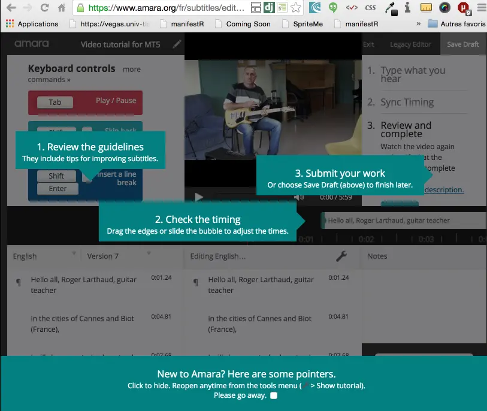Once your subtitles/captions are ok, you will be able to upload them to YouTube, or -this is what we wanted first- download them as WebVTT format:
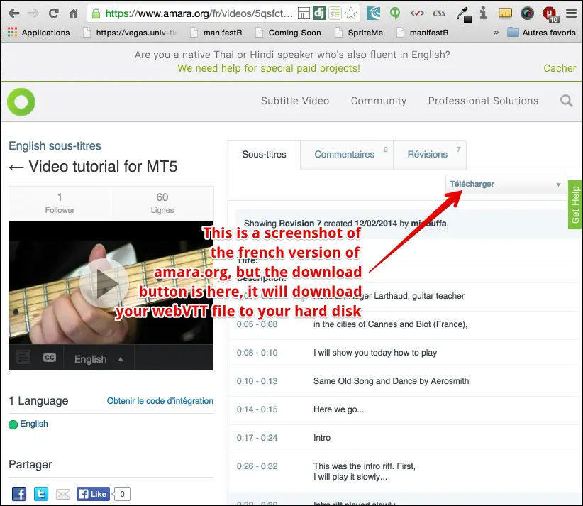Note that YouTube can also help you “make subtitles” with its speech recognition tool, but you will only be able to export in .srt format afterwards. You will have to convert this format afterwards to .vtt.
In this section, we will look at different possibilities for styling and positioning the text displayed as captions/subtitles while playing a video.
The example below shows how we can do that (play the video for 40s, look at the positions and styles of the subtitles and captions, look at the HTML):
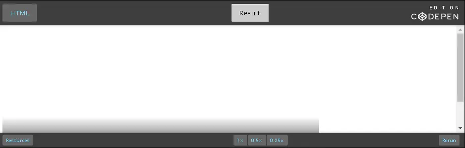The WebVTT file is shown below. Notice the new attributes that have been added on the right end of the duration values:
WEBVTT 00:00:01.000 --> 00:00:05.000 These captions test some features of the WebVTT formats 00:00:06.000 --> 00:00:10.000 line:5% This cue is positioned at the top of the video 00:00:11.000 --> 00:00:15.000 position:5% align:start This cue is positioned at the left side of the video. 00:00:16.000 --> 00:00:20.000 position:95% align:end And this one ate the right side. 00:00:21.000 --> 00:00:25.000 size:33% This cue is only a third of the width of the video, hence the multiple line breaks. 00:00:26.000 --> 00:00:30.000 This cue contains <b>bold</b> text. 00:00:31.000 --> 00:00:35.000 This cue contains <i>italic</i> text. 00:00:36.000 --> 00:00:40.000 This cue contains <u> </u> text. 00:00:41.000 --> 00:00:45.000 This cue contains <b><i><u>bold, italic, underlined</u></i></b> text. 00:00:46.000 --> 00:00:50.000 <c.myclass>This cue contains the class "myclass". Browsers that support ::cue CSS should make it red.</c> 00:00:51.000 --> 00:00:55.000 The following cue contains two voices. Tarzan should be blue and Jane green. 00:00:56.000 --> 00:01:00.000 <v Tarzan>Me Tarzan... <v Jane>That would make me Jane! bigtext 00:01:01.000 --> 00:01:05.000 This cue has a unique id. Using CSS, its font size should be 150%. 00:01:06.000 --> 00:01:10.000 The <00:01:06.333>text <00:01:06.666>in <00:01:07.000>this <00:01:07.333>cue <00:01:07.666>should <00:01:08.000>grow <00:01:08.333>one <00:01:08.666>word <00:01:09.000>at <00:01:09.333>a <00:01:09.666>time 00:01:11.000 --> 00:01:15.000 That's it! For now...
The video example tests nearly all the possibilities for positioning subtitles/captions, styling (using HTML element wrapping with <b>, <i>, etc.), voicing (subtitles corresponding to different characters will be displayed in different colors) and CSS styling.
It is possible to locate the cues in the video viewport using absolute or relative values. The attributes that position the text are located on the same line as the cue definition, like at line 9 of the previous WebVTT example file:
00:00:11.000 --> 00:00:15.000<b> position:5% align:start</b> This cue is positioned at the left side of the video.
And so on. Please look at the video as it is self-explanatory.
One can use the HTML elements <b>, <i>, <u> to modify the rendering of subtitles and captions, as illustrated in the example below:
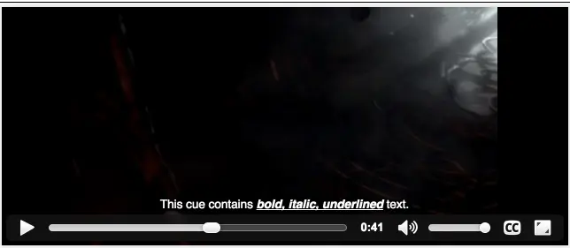It is possible to style using CSS classes as part of a cue value, using the <c> element. You can specify the CSS class that should be applied by adding “.” followed by the name of your CSS class. Here is an example:
<c.myclass>This cue contains the class "myclass". Browsers that support ::cue CSS should make it red.</c>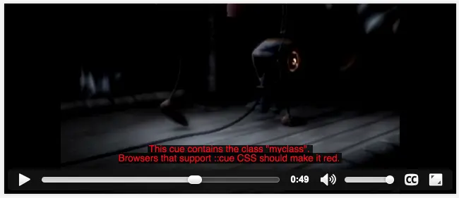
<style type="text/css">
::cue(.myclass) { color: red; }
::cue(v[voice="Tarzan"]) { color: blue; }
::cue(v[voice="Jane"]) { color: green; }
::cue(#bigtext) { font-size: 150%; }
</style>
The ::cue pseudo element selector is used to match “cues” in the webVTT file. You add parenthesis and a secondary CSS selector to match cues that have a particular id, or a particular CSS class, etc. Look at the CSS above and at the extract from the webVTT file, play the video, you will understand how the above CSS classes affect the rendering of the subtitles for Jane and Tarzan’s voices.
Support differs from one browser to another, see this compatibility table (from CanIuse). Note however that most of the enhanced players presented further on in the course provide full support.
Here is an example that shows the voices of the different characters displayed with different colors:
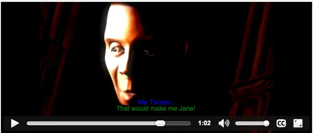Using the <v> tag, you will distinguish different voices that should be displayed in different colors (depending on the HTML5 video player implementation). See the CSS presented in the previous section to see how to specify the colors for the different voices.
00:00:56.000 --> 00:01:04.000 <v Tarzan>Me Tarzan... <v Jane>That would make me Jane!
When you play a movie in DVD or Blu-Ray format, a menu appears on the screen: play a movie, choose subtitles, etc. Usually there is also a “chapters” menu that allows you to quickly access a part of the movie. With videos on the Web, one can also indicate the chapter breakdown, using WebVTT files and a <track> element/tag.
Adding chapters is very similar to adding subtitles/captions. Look at line 5 in the code below, where we use an extra <track> element with a kind=“chapters” attribute.
<video poster="webvtt_talk.png" style="width:100%" preload="metadata">
<source src="webvtt_talk.webm">
<source src="webvtt_talk.mp4">
<source src="webvtt_talk.ogv">
<track id="nav" src="webvtt_talk_navigation.vtt"
<b>kind="chapters"<b> srclang="en">
<track id="cc" src="webvtt_talk_captions.vtt" kind="captions"
label="captions" srclang="en" default>
</video>
Here is an example of WebVTT files with defined chapters. Each "CUE" at lines 3, 7, 11, … can bear any name. We use "Chapter 1, Chapter 2, Ending, etc." but you are free to name them as you wish.
What makes them special is that the track has an attribute kind="chapters". Often, the <video> elements rendered in standard browsers ignore chapters, but enhanced HTML5 players take them into account, and it’s not much of a stretch to make your own enhanced player with a nice chapter presentation, as we’ll see in a more advanced chapter of this course. For example, we’ll generate a custom navigation menu, using the <track> JavaScript API (explained later in this section).
WEBVTT FILE Chapter 1 00:00:00.000 --> 00:00:10.700 Title Slide Chapter 2 00:00:10.700 --> 00:00:47.600 Introduction by Naomi Black Chapter 3 00:00:47.600 --> 00:01:50.100 Impact of Captions on the Web Chapter 4 00:01:50.100 --> 00:03:33.000 Requirements of a Video text format Ending 00:03:33.000 --> 00:04:57.766 Simple WebVTT file Greetings 6 00:04:57.766 --> 00:06:16.666 Styled WebVTT file
An example of what you can achieve using chapters, using the JW Player
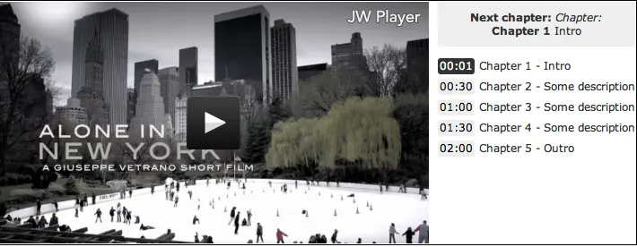Many tools are available to make and edit HTML5 video and caption/subtitles:
We do not claim that these are the best tools, so feel free to share your discoveries in the discussion forum!
Most “complex” HTML elements like forms, audio or video players, come with a JavaScript API that allows you to control them programmatically, customize them, etc.
This example shows a video with an enhanced progress bar that displays the different chapters as small "clickable" squares. Furthermore, using the JavaScript API of the <track> element, this Web site builds a navigation menu (on the right of the video):
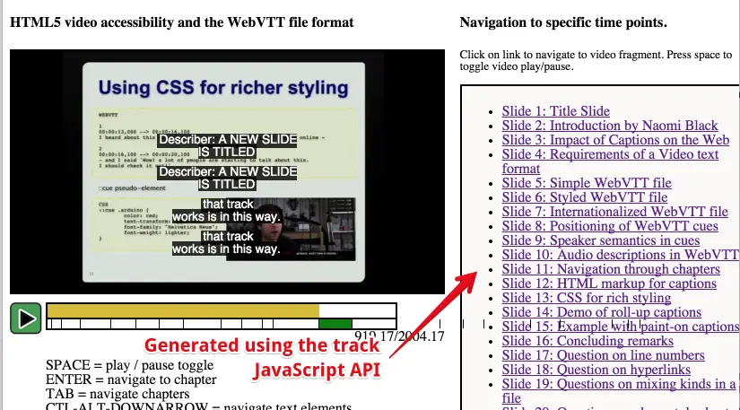Check this demo (only on Chrome) by Sam Dutton: it shows a video that comes with a WebVTT file that contains longitudes and latitudes. When the video plays, JavaScript functions are called at given times and get the longitude and latitude. A Google Map and a Google Street views are updated in real time.
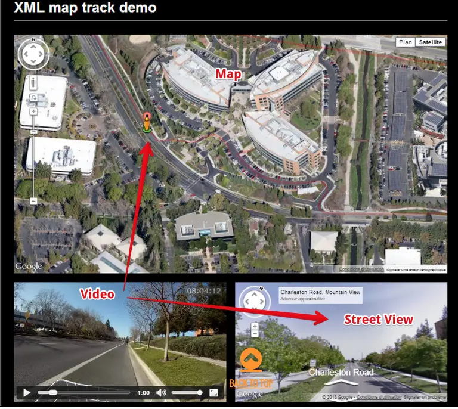This example shows how we manage to render music scores in real time as the video plays. Some JavaScript code listens to the ontimeupdate event while the video is playing. We use the currentTime property of the video to know exactly where we are in the video. Finally, we also rely on an external library to render in an HTML5 canvas the bars corresponding to the current video explanations. We render in real time guitar pro tablatures using the alphatab.net library.
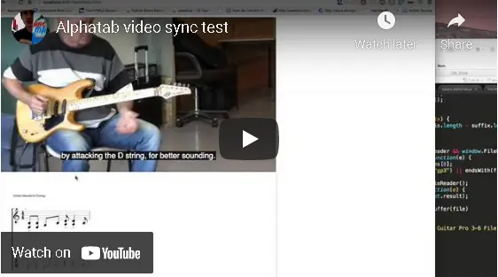There are numerous "enhanced" video players; most are free and open source, some are commercial. They offer lots of features, which are listed below. Not all of these features are available in every player, this list just illustrates what can be added to the standard <video> element.
We call them "HTML5 enhanced video players" because on top of being based on the <video> element, they come with custom features, custom look’n’feel, chapters, etc., based on a JavaScript API that makes such customization possible.
For those of you interested in this particular topic, here is a very good resource that compares most of the players presented in this section, in terms of accessibility. This resource has links to players designed especially for people with disabilities: accessible media players and resources.
Open source, and made for developers, video.js comes with many plugins (chapters, thumbnails etc.).
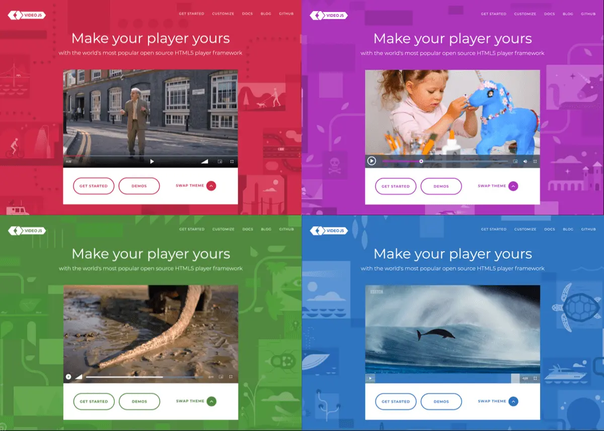Either solution (basic player or enhanced player) is good and HTML5 compliant.
Popular players such as JWPlayer have many explanations and examples on their Web sites, and are either free of charge or come with free versions.
Scrub Bar thumbnails (JWPlayer)
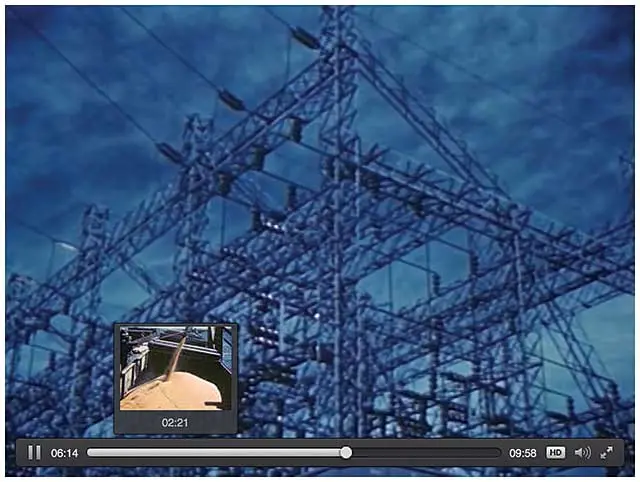Custom look’n’feel and logo (Sublime video player):
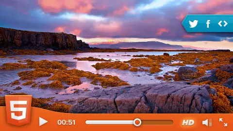Chapters and chapter thumbnails (JWPlayer):
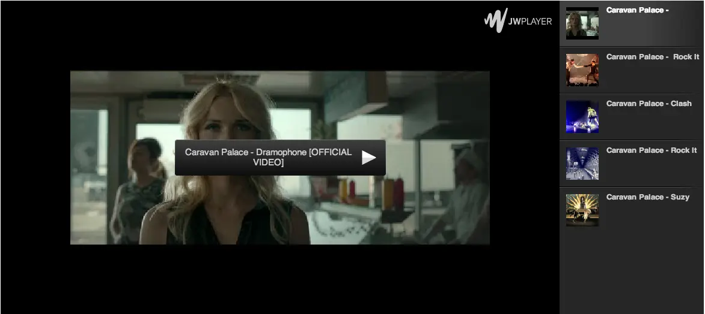PayPal accessible player:
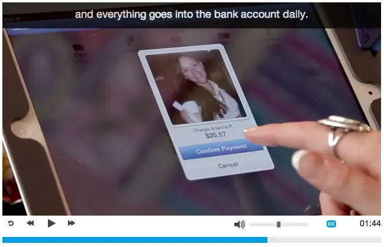LeanBack (says "free for non-commercial use", licensing is not very clear…):
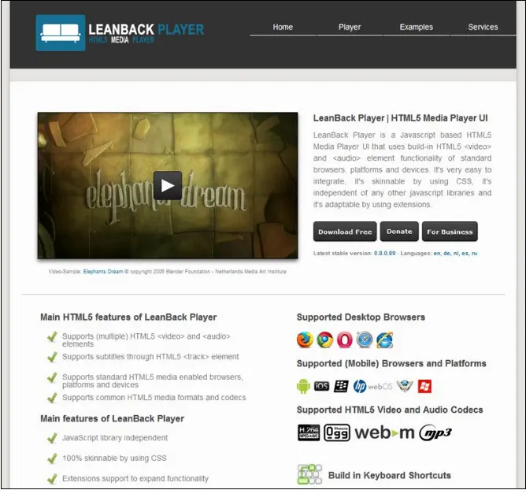HTML5 has introduced, with the getUserMedia and MediaDevices APIs, a way to control webcams and microphones programmatically. This allows, for example, to create an identification form where one can simply click on a button to capture his portrait from the Webcam of his computer or smartphone. It will also allow to record a video or audio extract (for example for a "telephone answering machine" type application), to create video conference applications running in the Web browser, or even musical applications if you plug a guitar into a sound card. The possibilities are numerous.
We will therefore study together how to access the audio and video streams of the hardware on which a Web application is going to run, and how to parameterize them (choice of camera, resolution, etc.).
The getUserMedia API is useful for controlling a Webcam video stream.
This API is one component of the WebRTC specification. When using getUserMedia, to manage a webcam with its video stream, we will always use it in conjunction with the <video> element. We could also use it with the <audio> element if we are only interested in using a microphone (i.e. from a computer), or any sound input .
The getUserMedia API, when dealing with video streams, is always used in conjunction with the <video> element.
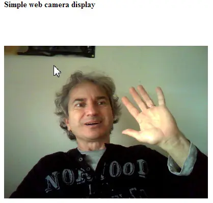The main idea is to set the srcObject attribute of a <video> element to the live video stream object coming out of the Webcam. To get this stream, you’ll have to call the navigator.getUserMedia(params) method from the getUserMedia API, that returns an ES6 promise (ES stands for "ECMAScript" and is the scripting language that forms the basis of JavaScript). Do not panic if you do not know ES6’s promises! The syntax is very simple, and you’ll learn what you need from the provided examples.
The stream is passed as a parameter to the then() method returned by the promise, as in this typical example (you can run it and see the result by clicking on the "CodePen" logo at the top right):
<video id="myVideo" autoplay>Fallback msg here.</video>
<script>
if (navigator.mediaDevices.getUserMedia) {
// request video and audio stream from the user's webcam
navigator.mediaDevices.getUserMedia({
audio: true,
video: true
}).then((stream) => {
let video = document.querySelector('#myVideo');
video.srcObject = stream;
video.play();
}).catch((error) => {
console.log('navigator.getUserMedia error: ', error);
});
}
</script>
We can also simplify the code by using a writing with async/await of JavaScript:
<video id="myVideo" autoplay>Fallback msg here.</video>
<script>
async function startWebCam() {
// request video and audio stream from the user's webcam
let stream = await navigator.mediaDevices.getUserMedia({
audio: true,
video: true
});
let video = document.querySelector('#myVideo');
video.srcObject = stream;
video.play();
}
startWebCam();
</script>
HTTPS is mandatory: for getUserMedia to work, it is mandatory to access the page that contains the JavaScript code through https://, for security reasons.
Support of getUserMedia/stream is very good in all modern browsers, including mobile ones. All the video conferencing applications you use that run in a Web browser are based on this API (Google Meet, Jitsi, Bigblue Button), and even Microsoft Teams is a web application in disguise.
Let’s see some more examples of what we can do with the getUserMedia API: start/stop the Webcam, take a screenshot from the current video stream from the Webcam, and apply CSS effects in real time. Below, we give links to some cool examples available on the Web.
<!DOCTYPE html>
<html lang="en">
<head>
<meta charset="utf-8">
<title>Webcam start/stop</title>
<script>
let webcamStream;
function startWebcam() {
// request video and audio stream from the user's webcam
navigator.mediaDevices.getUserMedia({
audio: true,
video: true
}).then((stream) => {
let video = document.querySelector('#video');
video.srcObject = stream;
video.play();
webcamStream = stream;
}).catch((error) => {
console.log('navigator.getUserMedia error: ', error);
});
}
function stopWebcam() {
webcamStream.getTracks()[0].stop(); // audio
webcamStream.getTracks()[1].stop(); // video
}
</script>
</head>
<body >
<video width=400 height=400 id="video" controls></video>
<p>
<button onclick="startWebcam();">Start WebCam</button>
<button onclick="stopWebcam();">Stop WebCam</button>
</p>
</body>
</html>
In order to stop the Webcam and make the hardware "unlock it", you need to call the stop() method of the video stream.
<!DOCTYPE html>
<html lang="en">
<head>
<meta charset="utf-8">
<title>Webcam start/stop</title>
<script>
let webcamStream;
function startWebcam() {
// request video and audio stream from the user's webcam
navigator.mediaDevices.getUserMedia({
audio: true,
video: true
}).then((stream) => {
let video = document.querySelector('#video');
video.srcObject = stream;
video.play();
webcamStream = stream;
}).catch((error) => {
console.log('navigator.getUserMedia error: ', error);
});
}
function stopWebcam() {
webcamStream.getTracks()[0].stop(); // audio
webcamStream.getTracks()[1].stop(); // video
}
</script>
</head>
<body>
<video width=400 height=400 id="video" controls></video>
<p>
<button onclick="startWebcam();">Start WebCam</button>
<button onclick="stopWebcam();">Stop WebCam</button>
</p>
</body>
</html>
Try this example that shows how to use the getUserMedia API. Note the CSS effects (click on the video to cycle from one effect to another):
//~~~~~~~~~~~~~~~~~~~~
// GET USER MEDIA CODE
//~~~~~~~~~~~~~~~~~~~~
let video;
let webcamStream;
function startWebcam() {
// request video and audio stream from the user's webcam
navigator.mediaDevices.getUserMedia({
audio: true,
video: true
}).then((stream) => {
let video = document.querySelector('#video');
video.srcObject = stream;
video.play();
webcamStream = stream;
}).catch((error) => {
console.log('navigator.getUserMedia error: ', error);
});
}
function stopWebcam() {
webcamStream.getTracks()[0].stop(); // audio
webcamStream.getTracks()[1].stop(); // video
}
//~~~~~~~~~~~~~~~~~~~~~~~~~~~~~~
// CODE FOR CHANGING CSS FILTERS
//~~~~~~~~~~~~~~~~~~~~~~~~~~~~~~
let idx = 0;
let filters = [
'grayscale',
'sepia',
'blur',
'brightness',
'contrast',
'hue-rotate', 'hue-rotate2', 'hue-rotate3',
'saturate',
'invert'
];
function changeFilter(el) {
// Remove all CSS classes for element el
el.className = '';
// Choose a CSS class name
console.log("toggling effect: " + filters[idx filters.length]);
let effect = filters[idx++ % filters.length];
el.classList.add(effect);
}
#output {
width: 307px;
height: 250px;
background: rgba(255,255,255,0.5);
border: 1px solid #ccc;
}
#screenshot-stream {
width: initial;
height: initial;
}
#screenshot {
vertical-align: top;
}
.blur {
filter: blur(3px);
}
.brightness {
filter: brightness(5);
}
.contrast {
filter: contrast(8);
}
.hue-rotate {
filter: hue-rotate(90deg);
}
.hue-rotate2 {
filter: hue-rotate(180deg);
}
.hue-rotate3 {
filter: hue-rotate(270deg);
}
.saturate {
filter: saturate(10);
}
.grayscale {
filter: grayscale(1);
}
.sepia {
filter: sepia(1);
}
.invert {
filter: invert(1)
}
<!DOCTYPE html>
<html lang="en">
<head>
<meta charset="utf-8">
<title>Webcam and CSS effects</title>
</head>
<body>
<h1>Example of CSS effects on a live video stream</h1>
<p>
Click the button "start webcam at the end of this page, then click on the video to toggle the
different effects.</p>
</p>
<video onclick="changeFilter(this);" width=400 height=400 id="video" controls autoplay></video>
<p>
<button onclick="startWebcam();">Start WebCam</button>
<button onclick="stopWebcam();">Stop WebCam</button>
</p>
</body>
</html>
The trick is to copy and paste the current image from the video stream into a <canvas> element.
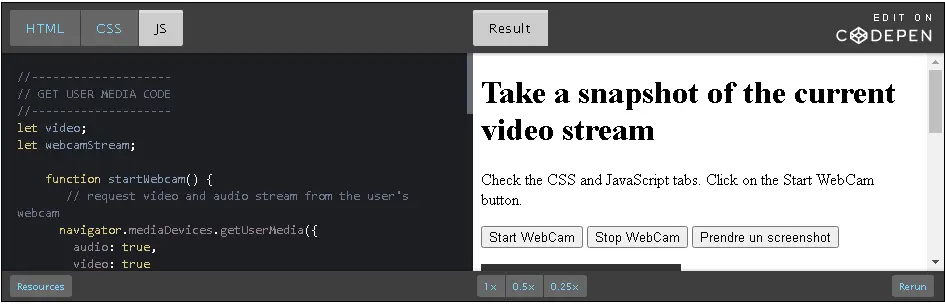//~~~~~~~~~~~~~~~~~~~~
// GET USER MEDIA CODE
//~~~~~~~~~~~~~~~~~~~~
let video;
let webcamStream;
function startWebcam() {
// request video and audio stream from the user's webcam
navigator.mediaDevices.getUserMedia({
audio: true,
video: true
>
}).then((stream) => {
video = document.querySelector('#video');
video.srcObject = stream;
video.play();
webcamStream = stream;
}).catch((error) => {
console.log('navigator.getUserMedia error: ', error);
});
}
function stopWebcam() {
webcamStream.getTracks()[0].stop(); // audio
webcamStream.getTracks()[1].stop(); // video
}
//~~~~~~~~~~~~~~~~~~~~~
// TAKE A SNAPSHOT CODE
//~~~~~~~~~~~~~~~~~~~~~
var canvas, ctx;
function init() {
// Get the canvas and obtain a context for
// drawing in it
canvas = document.getElementById("myCanvas");
ctx = canvas.getContext('2d');
}
function snapshot() {
// Draws current image from the video element into the canvas
ctx.drawImage(video, 0,0, canvas.width, canvas.height);
}
canvas {
border:1px solid black;
}
<!DOCTYPE html>
<html lang="en">
<head>
<title>WebCam screenshot</title>
<meta charset="utf-8"/>
</head>
<body onload="init();">
<h1>Take a snapshot of the current video stream</h1>
Check the CSS and JavaScript tabs. Click on the Start WebCam button.
<p>
<button onclick="startWebcam();">Start WebCam</button>
<button onclick="stopWebcam();">Stop WebCam</button>
<button onclick="snapshot();">Prendre un screenshot</button>
</p>
<video onclick="snapshot(this);" width=200 height=200 id="video" controls autoplay></video>
<p>
Screenshots : </p>
<canvas id="myCanvas" width="200" height="150"></canvas>
</body>
</html>
We will look at this example in greater detail in the next course section (related to the <canvas> element).
Instead of using the getUserMedia API with: navigator.getUserMedia({video:true}, onSuccess, onError), it is also possible to use {audio:true} for the first parameter. In this case, only the microphone input will be captured. Notice that {video:true, audio:true} is also accepted, if you write a video conferencing system and need to capture both the audio and the video (this is often the case when writing WebRTC applications).
Apart from videoconferencing, microphone input will be used for music Web apps, from the WebAudio API. This API focuses on real time sound processing and music synthesis. This API is covered in the advanced W3Cx HTML5 course (HTML5 Apps and Games).
Check out the WebAudio demonstrations written by Chris Wilson, esp. the one called “Input effects”.
The image below is taken from one of the demonstrations, where the sound captured by the microphone is processed in real time. We get visualizations of the signal in real time as an animated waveform, animated frequencies or animated audiogram. If we connect an electric guitar to the sound card input, then this demonstration shows that we can recreate with WebAudio most of the classic effects used by guitarists (delay, reverb, distortion, chorus, etc.).
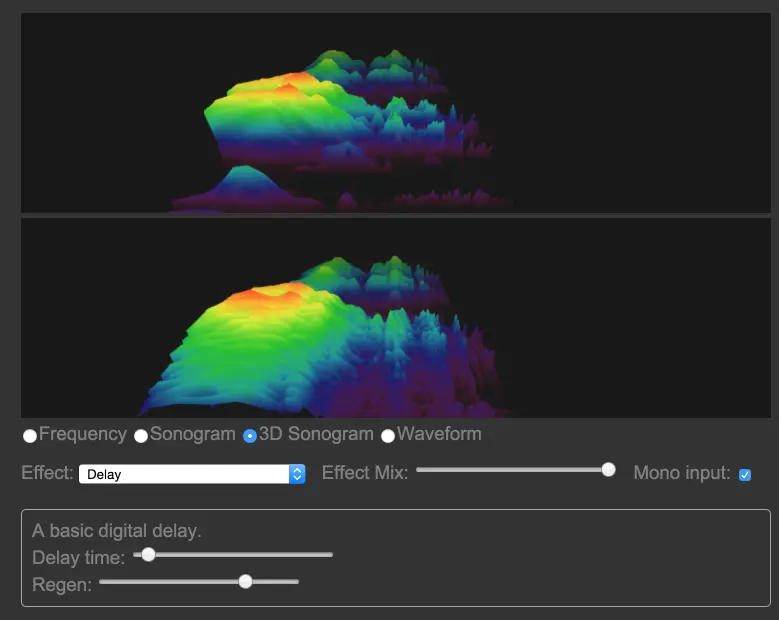It is possible to set “hints” for the preferred cam/resolution during video capture. This is done by using a "constraint" object that is passed as a parameter to the getUserMedia(…) method. It’s just the same object we passed in the basic example: navigator.getUserMedia({video:true}, success, error) except that this time this object is a little more complex by including new properties in addition to video:true or audio:true.
For more information, this article on MDN about the getUserMedia API gives great examples on how to set the camera resolution and/or to choose the front or back camera when using a mobile phone.
var vgaButton, qvgaButton, hdButton, dimensions, video, stream;
function init() {
vgaButton = document.querySelector('button#vga');
qvgaButton = document.querySelector('button#qvga');
hdButton = document.querySelector('button#hd');
dimensions = document.querySelector('p#dimensions');
video = document.querySelector('video');
// Defines event listeners for the buttons that set the resolution
qvgaButton.onclick = function() {
getMedia(qvgaConstraints);
};
vgaButton.onclick = function() {
getMedia(vgaConstraints);
};
hdButton.onclick = function() {
getMedia(hdConstraints);
};
// Trick: check regularly the size of the video element and display it
// When getUserMedia is called the video element changes it sizes but for
// a while its size is zero pixels... o we check every half a second
video.addEventListener('play', function() {
setTimeout(function() {
displayVideoDimensions();
}, 500);
});
}
// The different values for the constraints on resolution
var qvgaConstraints = {
video: {
width: { max: 320 },
height: { max: 180 }
}
};
var vgaConstraints = {
video: {
width: { max: 640 },
height: { max: 360 }
}
};
var hdConstraints = {
video: {
width: { min: 1280 },
height: { min: 720 }
}
};
// The function that is called when a button has been clicked: starts the video
// with the preferred resolution
function getMedia(constraints) {
if (!!stream) {
video.srcObject = null;
stream.getTracks()[0].stop();
}
navigator.mediaDevices.getUserMedia(constraints)
.then((stream) => {
video.srcObject = stream;
video.play();
window.stream = stream;
})
.catch((error) =>{
console.log('navigator.getUserMedia error: ', error);
});
}
// util function that is called by the setInterval(...) every 0.5s, for
// displaying the video dimensions
function displayVideoDimensions() {
dimensions.innerHTML = 'Actual video dimensions: ' + video.videoWidth +
'x' + video.videoHeight + 'px.';
}
video {
border:1px solid;
}
<!DOCTYPE html>
<html lang="en">
<head>
<meta charset="utf-8"/>
<title>getUserMedia constraints for Webcam resolutions</title>
</head>
<body onload="init();">
<h1>Set the camera resolution</h1>
Example adapted from:
<a href="https://www.simpl.info/getusermedia/constraints/">
https://www.simpl.info/getusermedia/constraints/
</a>
<br>
<p>Click a button to call <code>getUserMedia()</code> with appropriate resolution. </p>
<div id="buttons">
<button id="qvga">QVGA</button>
<button id="vga">VGA</button>
<button id="hd">HD</button>
</div>
<p id="dimensions"></p>
<video autoplay></video>
</body>
</html>
var vgaConstraints = {
video: {
width: { max: 640 },
height: { max: 360 }
}
};
var hdConstraints = {
video: {
width: { min: 1280 },
height: { min: 720 }
}
};
let constraints = hdConstraints;
navigator.mediaDevices.getUserMedia(constraints)
.then((stream) => {...}
Use this Web app that systematically tests a set of "preferred resolutions" and compared them to the actual resolutions returned by the browser. Remember that the requested resolution is a hint, and there is no real guarantee that your configuration will allow it.
Here are some other constraints you can set. In particular, look at the ones for selecting the front or rear camera (smartphones):
// more on video resolution
constraints = {
video: {
width: { min: 1024, ideal: 1280, max: 1920 },
height: { min: 776, ideal: 720, max: 1080 }
}
}
// Framerate
constraints = { video: { frameRate: { ideal: 10, max: 15 } } };
// front and back camera (mobile), some examples
var front = false;
document.getElementById('flip-button').onclick = function() {
front = !front;
};
// toggle front and back camera (mobile) by clicking a button
constraints = { video: { facingMode: (front? "user" : "environment") } };
// prefer front camera
constraints = { audio: true, video: { facingMode: "user" } }
// require rear camera
constraints = { audio: true, video: { facingMode: { exact: "environment" } } }
function gotDevices(deviceInfos) {
for (var i = 0; i !== deviceInfos.length; ++i) {
var deviceInfo = deviceInfos[i];
console.log("device with id: " + deviceInfo.deviceId);
// possible values: audioinput, audiooutput, videoinput
console.log("device with kind: " + deviceInfo.kind);
// 'speaker' or 'camera' for example
console.log("device with label: " + deviceInfo.label);
//... should build a menu, test kind/label and set
// audioSource and videoSource variables
}
}
// ...
var constraints = {
audio: {deviceId: audioSource ? {exact: audioSource} : undefined},
video: {deviceId: videoSource ? {exact: videoSource} : undefined}
};
navigator.mediaDevices.getUserMedia(constraints).
then(gotStream).then(gotDevices).catch(handleError)
This MediaRecoredr API allows to record / capture the audio or video stream. There are many sources for audio or video streams, but we will only consider here the streams coming from a WebCam or a sound input (i.e. microphone).
For example, the MediaRecorder API is used to record the video stream from a WebCam as a file saved on the hard disk. Below is a screenshot of an application allowing to record the WebCam. You will be able to run this example a little further, but for security reasons, it cannot run directly in this Web page.
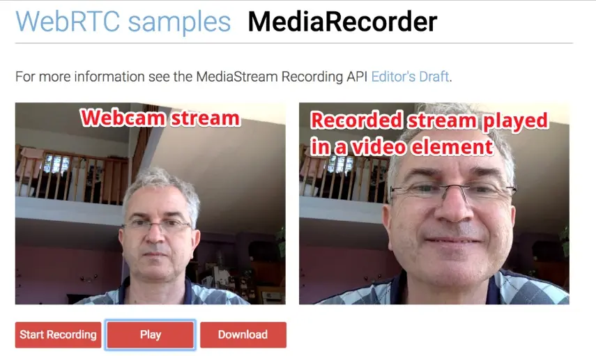Let’s record, replay and download the video stream captured using a Webcam. You can test it below by clicking on "CodePen" at the top right:
var mediaRecorder;
var recordedBlobs;
var gumVideo = document.querySelector('video#gum');
var recordedVideo = document.querySelector('video#recorded');
var recordButton = document.querySelector('button#record');
var playButton = document.querySelector('button#play');
var downloadButton = document.querySelector('button#download');
recordButton.onclick = toggleRecording;
playButton.onclick = play;
downloadButton.onclick = download;
// get stream using getUserMedia
navigator.mediaDevices.getUserMedia({ audio: true,video: true})
.then((stream) => {
recordButton.disabled = false;
console.log('getUserMedia() got stream: ', stream);
window.stream = stream;
gumVideo.srcObject = stream;
})
.catch((error) => {
console.log('navigator.getUserMedia error: ', error);
});
function handleDataAvailable(event) {
if (event.data && event.data.size > 0) {
recordedBlobs.push(event.data);
}
}
function handleStop(event) {
console.log('Recorder stopped: ', event);
}
function toggleRecording() {
if (recordButton.textContent === 'Start Recording') {
startRecording();
} else {
stopRecording();
recordButton.textContent = 'Start Recording';
playButton.disabled = false;
downloadButton.disabled = false;
}
}
// create the media recorder
function startRecording() {
recordedBlobs = [];
try {
mediaRecorder = new MediaRecorder(window.stream);
} catch (e) {
console.error('Exception while creating MediaRecorder: ' + e);
return;
}
console.log('Created MediaRecorder', mediaRecorder);
recordButton.textContent = 'Stop Recording';
playButton.disabled = true;
downloadButton.disabled = true;
mediaRecorder.onstop = handleStop;
mediaRecorder.ondataavailable = handleDataAvailable;
mediaRecorder.start(10); // collect 10ms of data
console.log('MediaRecorder started', mediaRecorder);
}
function stopRecording() {
mediaRecorder.stop();
console.log('Recorded Blobs: ', recordedBlobs);
recordedVideo.controls = true;
}
function play() {
var superBuffer = new Blob(recordedBlobs, {type: 'video/webm'});
recordedVideo.src = window.URL.createObjectURL(superBuffer);
}
function download() {
var blob = new Blob(recordedBlobs, {type: 'video/webm'});
var url = window.URL.createObjectURL(blob);
var a = document.createElement('a');
a.style.display = 'none';
a.href = url;
a.download = 'test.webm';
document.body.appendChild(a);
a.click();
setTimeout(function() {
document.body.removeChild(a);
window.URL.revokeObjectURL(url);
}, 100);
}
/*
* Copyright (c) 2015 The WebRTC project authors. All Rights Reserved.
*
* Use of this source code is governed by a BSD-style license
* that can be found in the LICENSE file in the root of the source
* tree.
*/
button {
margin: 0 3px 10px 0;
padding-left: 2px;
padding-right: 2px;
width: 99px;
}
button:last-of-type {
margin: 0;
}
p.borderBelow {
margin: 0 0 20px 0;
padding: 0 0 20px 0;
}
video {
height: 232px;
margin: 0 12px 20px 0;
vertical-align: top;
width: calc(20em - 10px);
}
video:last-of-type {
margin: 0 0 20px 0;
}
video#gumVideo {
> margin: 0 20px 20px 0;
}
@media screen and (max-width: 500px) {
button {
font-size: 0.8em;
width: calc(33% - 5px);
}
}
@media screen and (max-width: 720px) {
video {
height: calc((50vw - 48px) * 3 / 4);
margin: 0 10px 10px 0;
width: calc(50vw - 48px);
}
video#gumVideo {
margin: 0 10px 10px 0;
}
}
<!DOCTYPE html>
<html>
<head>
<meta charset="utf-8">
<meta name="viewport" content="width=device-width">
<title>MediaRecorder API usage</title>
</head>
<body>
<div id="container">
<h1><a href="//webrtc.github.io/samples/" title="WebRTC samples homepage">WebRTC example:</a> <span>MediaRecorder</span></h1>
<p>For more info, see the <a href="https://w3c.github.io/mediacapture-record/MediaRecorder.html"
title="W3C MediaStream Recording API - Editor's Draft">MediaStream Recording API Editor's Draft</a>.</p>
<video id="gum" autoplay muted></video>
<video id="recorded" loop controls></video>
<div>
<button id="record" disabled>Start Recording</button>
<button id="play" disabled>Play</button>
<button id="download" disabled>Download</button>
</div>
<a href="https://github.com/webrtc/samples/tree/gh-pages/src/content/getusermedia/record" title="View source for this page on GitHub" id="viewSource">View source on GitHub</a>
</div>
</body>
</html>
Click “start recording”, then press the play button on the video element on the right of the app. You can also click the “download” button to download a .webm file, playable offline with a media player such as VLC or online in a Web page with the <video> element.
var options = {mimeType: 'video/webm; codecs=vp9'};
mediaRecorder = new MediaRecorder(stream, options);
… where stream is typically the object returned by the call to getUserMedia (see previous examples).
var recordedChunks = []; // will hold the recorded stream
mediaRecorder.ondataavailable = handleDataAvailable;
mediaRecorder.start();
function handleDataAvailable(event) {
if (event.data.size > 0) {
recordedChunks.push(event.data);
} else {
// ...
}
When you’re done, you need to call the stop() method of the mediaRecorder object. This will end the periodic execution of the handleDataAvailable method, and stop the data capture.
mediaRecorder.stop();
This piece of code creates a blob with the recordedChunks array. Use the URL.createObjectURL(recordedChunks) standard method to create another object that can be used as a value to set the src attribute of an HTML5 video element.
Like that, the recorded stream can be played using a standard HTML5 <video> element.
function play() {
var superBuffer = new Blob(recordedChunks);
videoElement.src =
window.URL.createObjectURL(superBuffer);
}
A trick consists in creating, on the fly, an invisible link with a download attribute (see Module 1) and a href attribute that points to the blob object containing the recorded stream encoded using a given codec, then generate programmatically a click event on the link. This will force the browser to download a file of type video/webm to the hard disk.
function download() {
var blob = new Blob(recordedChunks, {
type: 'video/webm'
});
var url = URL.createObjectURL(blob);
var a = document.createElement('a');
document.body.appendChild(a);
a.style = 'display: none';
a.href = url;
a.download = 'test.webm';
a.click();
window.URL.revokeObjectURL(url);
}